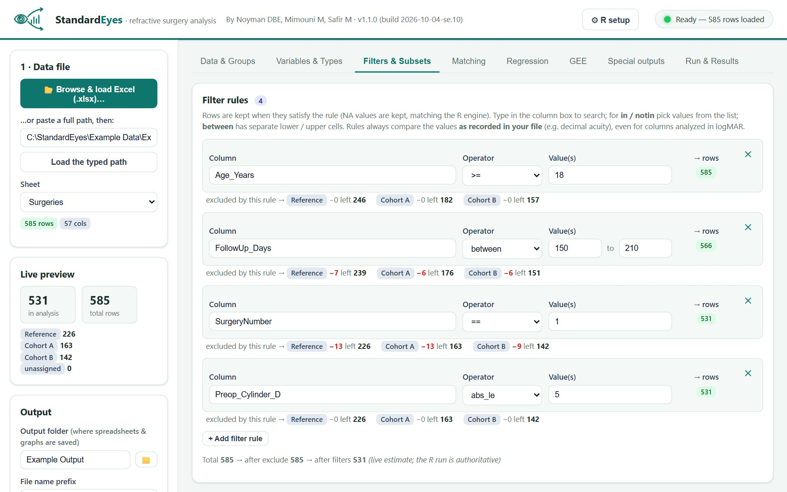
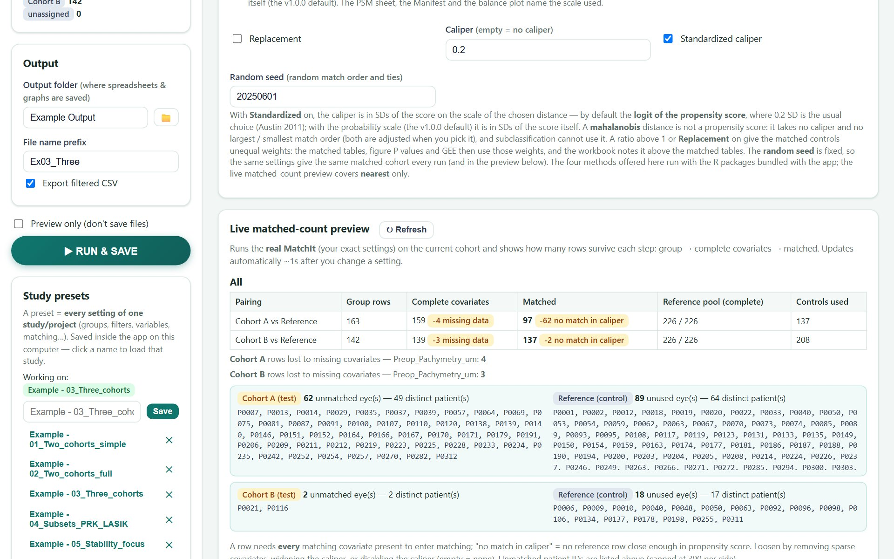
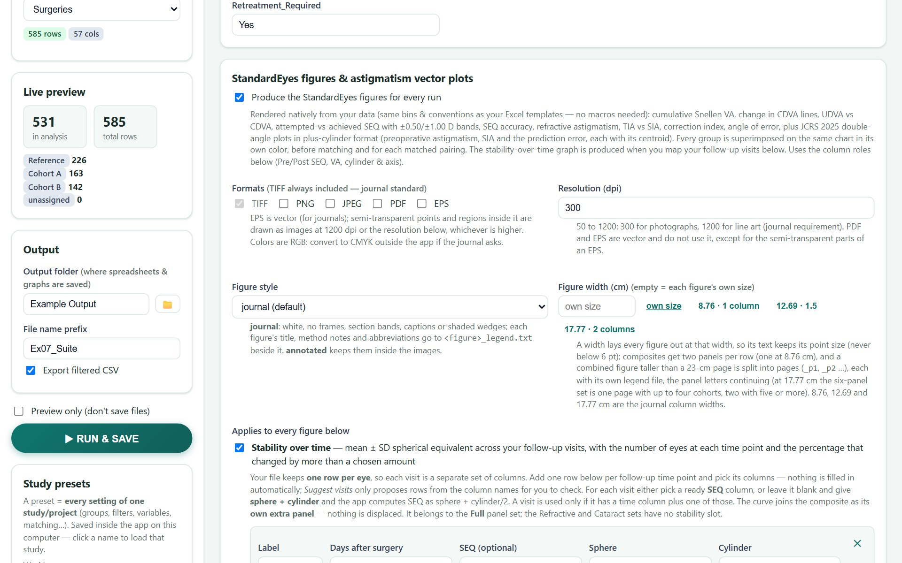
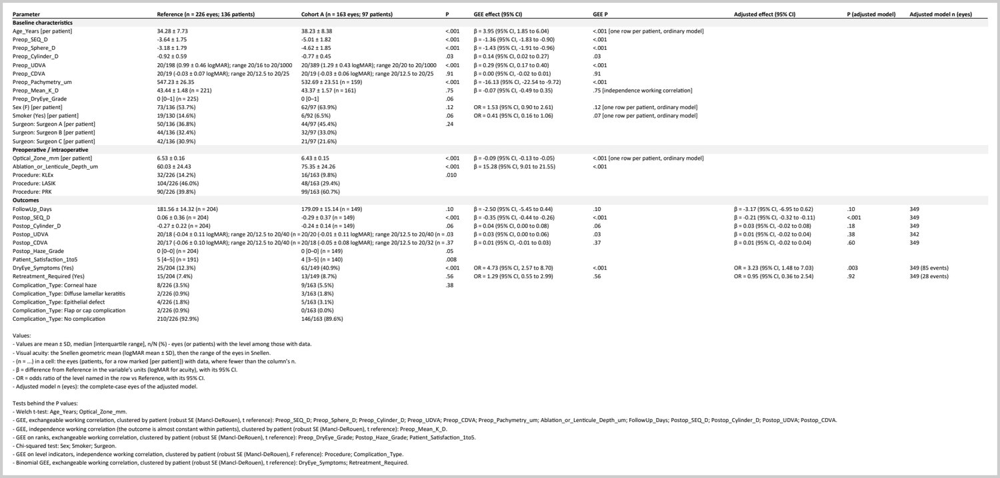

What StandardEyes does with your data
A plain account of each step in version 1.1.0: what is computed, which test is used when, and what the output means. The statistical reference gives the full detail, and the list of changes says what is new in 1.1.0.
Lay out your data
StandardEyes reads an Excel sheet (.xlsx or .xlsm) with one row per eye per surgery. Column names are yours to choose. You tell the app what each column is, and it never guesses from a name.
| You point the app to | It is used for |
|---|---|
| Patient ID | Linking the two eyes of one person. The patient is the cluster in every clustered test and model, the resampling unit of the astigmatism bootstrap, and the unit for patient-level variables. |
| Eye ID | Identifying the row. |
| Group source column | The column whose values define the groups you compare. |
| Refraction and acuity columns | Preoperative and postoperative sphere, cylinder, axis, spherical equivalent (SEQ), uncorrected and corrected distance visual acuity (UDVA, CDVA). They feed the figures, the astigmatism analysis and the export tabs. |
- A retreatment is another row for the same eye. A rule such as “surgery number = 1” restricts the analysis to primary procedures.
- A row without a patient ID is counted as its own patient, and the run log says how many such rows there were. With no patient ID column at all, eyes are treated as independent and the output says so.
- A cell formatted as a date inside a column of numbers is treated as missing and reported, because Excel's hidden date number would otherwise distort the results.
Groups and the reference group
A group is a set of values of the group source column. You can define two groups or more. One group is the reference: every effect estimate, every matching pairing, every adjusted model and every versus-reference line is expressed relative to it. It is usually the control group or the standard technique. In the example dataset the groups are Reference, Cohort A and Cohort B.
Variables that describe the person and not the eye (age, sex, a systemic disease) can be marked per patient. They are then summarized and tested once per patient, and the table headers show both counts, for example Reference (n = 226 eyes; 136 patients).
Variable types and tests
Each variable you analyze is given one of four types. The type decides how it is summarized and which test compares the groups. When a patient ID is mapped and at least one patient has two analyzed eyes, the P value of every per-eye row is clustered by patient; otherwise the classical tests run.
| Type | Reported as | Clustered by patient (default) | Classical: two groups / three or more |
|---|---|---|---|
| Continuous | mean ± SD | Gaussian GEE | Welch t-test / Welch ANOVA |
| Ordinal | median [IQR] | GEE on ranks | Wilcoxon rank-sum / Kruskal–Wallis |
| Dichotomous | n (%) | Binomial (logistic) GEE | χ² test, or Fisher's exact test |
| Categorical | n (%) per level | Joint Wald test on the level indicators | χ² test, or Fisher's exact test |
- The clustered test is the same test the figure of that outcome prints, so a table and its figure give the same P value. With more than two groups it is one joint (overall) test. Where that GEE cannot be fitted (for example a group with no events, or only events), the table and the figure use a permutation test over patients (9999 permutations, fixed seed) that keeps each patient's eyes together, labeled “GEE not fitted”.
- The classical tests run for per-patient variables, when every patient has one analyzed eye, without a patient ID, and when you set Summary-table tests to classical on the GEE tab (the 1.0.0 behavior). Turning off Cluster p-values by patient makes both the tables and the figures classical.
- Welch tests are used because they do not assume that the groups have equal variances. The χ² test is used when every expected count is at least 5; otherwise Fisher's exact test.
- The summary sheets write the test that was used beside every P value. The publication-style table has no test column; a footnote under it names the test behind every P value.
- When a test cannot be done (a group with a single value, a variable that has the same value in every eye), the row says “Not estimable” and gives the reason. It is never reported as “no difference”.
- Comparisons of each group with the reference (the GEE columns and any pairwise columns) are Holm-adjusted within each variable and marked
[Holm]. - P values are printed in journal style by default: .27, .003, <.001, >.99 (two decimals, three below .01). P value style = classic gives 0.266 and <0.001. Means and SDs have two decimals, percentages one, and effects read “β = −0.22 (95% CI, −0.32 to −0.12)” or “OR = 3.34 (95% CI, 1.59 to 7.02)”.
Plus and minus cylinder
Files often mix plus- and minus-cylinder notation. For the tables, every sphere / cylinder / axis set you list is transposed to minus cylinder when the option is on: new sphere = sphere + cylinder, new cylinder = −cylinder, new axis = axis ± 90°. A cylinder value above zero is taken as plus notation, so no notation column is needed. Rows already in minus cylinder are left alone.
The astigmatism vectors do not depend on that switch. They read the sign of each cylinder and work in plus-cylinder format, as the JCRS 2025 standard asks: −2.00 × 180 and +2.00 × 90 give the same vector, also in a row that mixes the two forms and for a target typed in either form.
Visual acuity notations
One setting, VA notation in your file on the Variables & Types tab, says how every acuity column is recorded.
| Notation | Examples | How it is read |
|---|---|---|
| Decimal (default) | 1.0, 0.5 | As written. 1.0 is 20/20. |
| logMAR | 0.00, 0.30, -0.10 | decimal = 10−logMAR |
| Snellen | 20/40, 6/12, 20/25-2 | Feet or meters. Each letter missed or gained shifts logMAR by 0.02. |
| ETDRS letters | 85 | logMAR = 1.7 − 0.02 × letters, so 85 letters is 20/20. |
- Analyze visual acuity in logMAR is on by default for the acuity columns you map: the tables, tests and models run in logMAR. A cell then reads the Snellen geometric mean with the logMAR mean ± SD, for example
20/20 (0.00 ± 0.05 logMAR), and the range is given in Snellen. A mean on a chart line prints that line (20/16, 20/20, 20/25 …); otherwise the denominator is rounded (20/23). A file already in logMAR is never converted twice. Untick the switch to analyze acuity as recorded (the 1.0.0 default). - The figures and the mEYEstro tab always work from decimal acuity derived from your notation, so they are the same whichever notation the file uses.
- Counting fingers, hand motion and light perception (CF, HM, LP, NLP) become missing values and are counted in the log. They are not given an invented acuity.
- If the values clearly cannot be in the notation you chose (most cells unreadable, a decimal value of 0 or below, a logMAR value outside −0.5 to 3, or decimal values declared as ETDRS letters), the run stops and names the column. Subtler mismatches, such as decimal values declared as logMAR, give a warning in the interface and in the log, so read the warnings.
- Inclusion rules on acuity use the values in your file's own notation.
- Excel turns a typed
6/12into a date. Format Snellen columns as text.
Inclusion rules and subsets
Inclusion criteria are rules on columns, combined with AND: equal to, in a list, greater or less than, between, missing or not missing, text contains, and absolute-value versions for cylinder (so “absolute value ≤ 5” keeps −5.00 D and +5.00 D alike). Rules see refraction after the plus-to-minus transposition, and acuity in your file's own notation. As you add a rule, the app shows how many rows remain and how many each group lost. The sidebar counts as “in analysis” only the rows that fall in a group.

A subset column (for example the procedure) splits one preset into a complete, separate analysis for each value: a full PRK analysis and a full LASIK analysis, each with its own workbook and figures.
Matching
Matching makes the groups comparable on the baseline variables you choose. The propensity score is each eye's estimated chance of being in the compared group, given those variables. Eyes with similar scores are paired. StandardEyes uses the R package MatchIt and matches each group to the reference group. The default is 1:1 nearest-neighbor matching without replacement on the logit of the propensity score, with a caliper (the largest allowed difference) of 0.2 standard deviations of the logit of the propensity score (Austin 2011). The probability scale of version 1.0.0 stays selectable under Distance. Exact matching, coarsened exact matching and subclassification are also available.
- A live preview (for nearest-neighbor matching) runs the real matching on your current settings and shows, for each pairing, how many eyes had complete covariates and how many were matched.
- Balance is reported as standardized mean differences before and after matching, against the usual 0.1 threshold. A love plot shows the difference for each covariate before and after matching. The PSM sheet, the Manifest and the love plot name the scale of the propensity score.
- When the matching weights are not all 1 (matching with replacement, k:1 matching in which some eyes find fewer than k controls, or exact, coarsened exact or subclassification matching), the matched tables, models and figure P values use the weights, and the headers show the effective sample size.

Matching deals with measured confounders only. It does not turn an observational comparison into a randomized one.
Two eyes per patient
Two eyes of one person are more alike than two eyes of different people. A test that treats them as independent gives P values that are too small. StandardEyes uses generalized estimating equations (GEE), a regression method that takes the patient as a cluster and uses robust standard errors (R package geepack).
- Small-sample correction. Every GEE test and interval uses the Mancl-DeRouen bias-corrected robust standard error with a t reference (degrees of freedom = patients minus model coefficients), and an F reference for joint tests. GEE small-sample inference = none gives the uncorrected robust SE with a normal reference of version 1.0.0.
- Working correlation. Unmatched models use an exchangeable working correlation. That fit is kept only if it converged, its working correlation is below 0.95 and one further scoring step moves no coefficient by more than 0.01 SE; otherwise the model is refitted with an independence working correlation (the robust SE stays clustered by patient) and labeled so. Every model of a matched cohort uses an independence working correlation with SE clustered by patient, weighted or not (the approach MatchIt recommends); matched sets are not used as clusters.
- A variable marked per patient is never the outcome of an eye-level GEE: it is modeled on one row per patient by an ordinary linear or logistic model.
- Continuous outcomes give a mean difference. Dichotomous outcomes give an odds ratio. Both come with a 95% confidence interval. The GEE effect and P value can be added as columns to the summary tables.
- A clustered model needs at least 6 usable eyes from at least 3 patients, and every compared group needs 2 eyes from 2 patients. Otherwise the row says it is not estimable and why. A group with 2 to 9 patients gets a P value with a caution, in the tables, the GEE sheets and the figures.
If every patient contributes one eye, the ordinary tests are appropriate and GEE adds nothing.
Adjusted regression
For each outcome the app can fit a model of the outcome on the group and the covariates you choose, again clustered on the patient. The adjusted effect, its 95% confidence interval and P value are written next to the crude comparison in the outcome table, which also states the number of eyes in the adjusted model. The Regression sheet holds the full models and the crude estimate fitted on the same complete-case eyes, so crude and adjusted can be compared directly.
- The app suggests covariates by baseline imbalance (standardized mean difference above 0.10), plus age and sex. Choose covariates for imbalance, not for their effect on the P value.
- A covariate that is constant after the inclusion rules is dropped, with a note.
- When one group has no events (or only events), the odds ratio does not exist. The comparison is reported as not estimable, with the reason.
Matching and adjustment can be combined in one run: match on the measured confounders, then adjust for what is still imbalanced.
The figures
The figures follow the standard graphs for reporting refractive-surgery outcomes (Dupps et al., J Cataract Refract Surg 2011;37:1–3. Reinstein et al., J Cataract Refract Surg 2017;43:435–439), with one difference: every group is drawn on the same chart, in its own color.
| Panel set | Contains |
|---|---|
| Full | Visual acuity, efficacy, safety, spherical-equivalent accuracy, attempted versus achieved, defocus equivalent, refractive astigmatism, TIA versus SIA, the correction-index and angle-of-error histograms, and stability over time when visits are mapped. |
| Refractive | The Full set without defocus equivalent, stability and the vector panels. |
| Cataract | The Refractive set without safety and attempted versus achieved. Efficacy is measured against postoperative CDVA. |
- Journal style (the default): white background, no frames, section bands, captions or shaded wedges. Each figure's title, method notes and abbreviations (in alphabetical order) are written to
<figure>_legend.txtbeside it, ready for the figure legend. Figure style = annotated keeps them inside the image (the 1.0.0 look). - Files. Each panel is written as its own file and inside the combined figure, as TIFF (300 dpi by default, up to 1200 for line art), PNG, JPEG, PDF or EPS. EPS is vector; PostScript has no transparency, so the semi-transparent points and regions are embedded as images at 1200 dpi or more. Colors are RGB: convert to CMYK outside the app if the journal asks.
- Width. A Figure width of 8.76, 12.69 or 17.77 cm (the journal column widths) lays every figure out at that width, so its text keeps its size (never below 6 pt). A combined figure then has two panels per row (one at 8.76 cm), and one taller than a 23-cm page is written as pages
_p1,_p2, each with its own legend file, the panel letters continuing. Statistics lines that do not fit a panel at that size are listed in the legend file. - The bins carry the exact standard labels (≤ 0.25 D, > 2.00 D …); safety has seven categories under the axis title “Change in Snellen lines of CDVA”; stability is plotted as “Mean ± SD SEQ (D)”; percentage axes end at 100.
- With two groups each panel prints one test and names it. With three or more it prints an overall test and each group against the reference, Holm-adjusted and marked
[Holm]. The P values are clustered by patient by default. - Stability over time plots mean ± SD spherical equivalent at each mapped visit, at the median day actually observed, with the number of eyes under each point. Nothing is carried forward.
- An optional target column holds the intended spherical equivalent of each eye (monovision, a myopic target). Without it, eyes are taken as aimed at plano.

Astigmatism
The astigmatism analysis follows the JCRS 2025 standards for analyzing astigmatic outcomes (Koch et al., J Cataract Refract Surg 2025;51:447–455). All vectors are in plus-cylinder format: magnitude at the plus axis, x = M cos 2θ, y = M sin 2θ. On every double-angle plot with-the-rule astigmatism (plus axis 90) lies on the left and against-the-rule (plus axis 180) on the right.
| Vector | Meaning |
|---|---|
| PRE | Preoperative refractive astigmatism. |
| SIA | Surgically induced astigmatism = postoperative − preoperative. |
| PE | Prediction error = postoperative − target; equal to the postoperative astigmatism when the target is plano. The standard's main outcome. |
| POST | Postoperative refractive astigmatism; plotted on its own only when a target column is mapped and a target is not plano. |
The Alpins quantities stay available for the standard graphs: target induced astigmatism (TIA = target − PRE), the difference vector (DV = −PE), the correction index, the angle of error (missing when SIA is zero), the magnitude of error and the index of success. The vectors are computed from the preoperative and postoperative cylinder and axis you map, against an optional target, or read from your own magnitude and plus-axis columns.
- Double-angle plots of PRE, SIA and PE (and POST when it applies). For each cohort: the number of eyes and patients, the centroid (mean vector, M @ θ and x, y), the total SD (population denominator), the magnitude mean ± SD, median, range and root mean square.
- 95% region of the eyes: the depth-based convex polygon, built as in the WHWK functions (the Wilcox-Holladay-Wang-Koch R functions, the journal's reference tool). Depths tie, so it can hold more than 95% of the eyes; in a cohort of up to about 180 eyes the depth rule often removes no eye, and the polygon is then the convex hull of all eyes. The sheet and the legend file give the count. The bivariate-normal ellipse is the other choice.
- 95% confidence region of the centroid: the bootstrap convex polygon of the centroid, as in the WHWK functions (999 bootstrap centroids, patients resampled when clustered). The Hotelling T² ellipse is the other choice.
- Each centroid against zero: the bootstrap projection-distance test of the same functions. With 999 resamples P = .001 is its floor, and the legend file says so. The one-sample Hotelling test is the classic alternative.
- Between cohorts, for each vector: the centroid, the precision (distances of the eyes to their cohort centroid) and the mean magnitude, by 20%-trimmed tests calibrated by a bootstrap that resamples patients within each cohort. Trimming and winsorizing follow the standard order-statistic definitions (Wilcox). Where the trimmed statistic is not defined, as is common with quarter-diopter data, the same bootstrap test runs untrimmed and is labeled so. A clustered GEE test and the classical Hotelling / Welch tests are also offered (Astigmatism tests).
- Cumulative percentages of eyes with a magnitude of ≤ 0.25, ≤ 0.50 … ≤ 2.00 D and > 1.00 D: between cohorts by a patient-clustered logistic GEE (Fisher's exact test without clustering), and PRE against POST within a cohort by McNemar's test, in its cluster-adjusted form when clustering is on.
- P values are given nominal and Holm-adjusted, within each vector across centroid, precision, magnitude and intervals, and across the comparisons with the reference.
- Sheets. “Astigmatism (JCRS 2025)” holds all of the above with the region vertices and the method notes, and is also written as a CSV beside the workbook; “Astigmatism vectors” lists every eye's vectors (magnitude, plus axis, x, y), ready for other tools.
- Input files for the WHWK functions. With the double-angle plots, a
WHWK inputfolder inside the run's figure folder holds, for each plotted vector,<vector>_vector.txt(columns<Cohort>.x,<Cohort>.y) and<vector>_magnitude.txt, tab-delimited, with a README. The functions are obtained from osf.io/xhe8u; they treat eyes as independent and refuse values beyond 6 D. - The semicircle (single-angle) plots of TIA, SIA and DV at plus axes are kept for familiarity; they are not part of the standard.
More than two groups
| Two groups | Three or more | |
|---|---|---|
| Table P value | The two groups differ | At least one group differs (an overall test) |
| Matching | One pairing | Each group is matched to the reference separately |
| GEE and regression | One estimate | One estimate for each group against the reference (Holm-adjusted) |
| Figures | One test per panel | Overall test, plus each group against the reference (Holm-adjusted) |
| Astigmatism | One comparison per vector | Omnibus test, plus each cohort against the reference (Holm-adjusted) |
With several groups, the overall P value says only that the groups are not all alike. Which groups differ is answered by the rows that compare each group with the reference.
What a run produces
Before you run, the Run & Results tab lists how the numbers will be computed and shown. With Preview only ticked, results are held inside the app, where you can open every figure and sheet, and nothing is written to your output folder until you click Save ALL to output folder or save single files.
| Output | Contents |
|---|---|
| Main workbook | Contents, Manifest, overview, baseline and preoperative summary, outcome summary, publication-style table, the astigmatism sheets, a matching sheet for each pairing, GEE sheets, regression sheets, and the same for the matched groups. |
| Matched-only workbook | The matched rows of every pairing, with MatchIt's distance, weights and matched set. |
| Figure folder | Every panel on its own and the combined figures, before matching and for each matched pairing, each with its legend file, and the WHWK input folder. |
| Love plots | Covariate balance before and after matching, in the figure formats you chose, with a legend file. |
| CSV files | The “Astigmatism (JCRS 2025)” sheet, and (optional) the analyzed rows, with a GroupLabel column and the values as analyzed. |
Optional tabs lay the data out for mEYEstro and AstigMATIC (mEYEstro_<group>, AstigMATIC_<group>; for matched pairing k mEYEstro_M<k>_<group>), for users who want to check the same eyes in those tools.

You can download complete sample outputs from the examples page.
Reproducibility
- A preset stores every setting of a study in one small JSON file. Loading it restores the analysis exactly, on your computer or a colleague's. A preset saved by version 1.0.0 still loads; a setting it does not contain takes the 1.1.0 default.
- The Manifest sheet of every workbook records the StandardEyes version and build (also for runs started from the command line), the run duration, the R and package versions, the input file and its checksum, the settings that shape the numbers (matching scale, GEE inference, table tests, P value style, acuity, figure and astigmatism settings) and the random seeds. Workbooks name “StandardEyes” as their author, never your Windows user name.
- Steps that use random numbers (matching order, the bootstraps, permutation and Monte-Carlo exact tests) use fixed seeds, so the same input gives the same output.
- All numbers are computed by the R engine, which also runs from the command line with the same settings file.
Known limits
- The ready-to-run download is for Windows and needs R 4.5. Other systems can run from source.
- On a matched cohort with unequal weights, the astigmatism tests other than a GEE centroid test do not use the matching weights; the output says so.
- Left eyes are not mirrored in the astigmatism analysis. With a mapped eye column the sheet lists the right-eye and left-eye centroids apart.
- Clustered P values from a group with 2 to 9 patients carry a caution even with the small-sample correction.
- PDF figures cannot render right-to-left text (Hebrew, Arabic) in group labels. Use PNG or TIFF for those.
- Figures are written in RGB. R cannot write CMYK files.
- One analysis runs at a time.
Frequently asked questions
Does my data leave my computer?
No. The app runs on your computer and listens only on the local address 127.0.0.1. It has no telemetry and makes no network requests.
Is it free? May I use it for a commercial study?
Yes to both. It is released under the MIT License.
Do I need to know R?
No. R must be installed, but you never open it. Everything is done in the app's interface.
Does it run on a Mac?
The ready-to-run download is for Windows 10 and 11. On macOS or Linux the app runs from source with Python and R 4.5. The README lists the steps.
Why do I get different numbers than with version 1.0.0?
Version 1.1.0 changes several defaults: clustered table tests, the small-sample correction of GEE, the logit caliper, logMAR acuity, the journal P value style and the astigmatism analysis. Each change, and the setting that gives the 1.0.0 behavior back, is listed under what is new in 1.1.0. The Manifest sheet records the settings of every run.
My data is in CSV or an old .xls file. Can I use it?
Open it in Excel and save it as .xlsx. The app reads .xlsx and .xlsm files.
My acuity is in Snellen or logMAR. Do I have to convert it?
No. Choose the notation on the Variables & Types tab and the app reads it as it is. See visual acuity notations.
Can I use it for one group only?
StandardEyes is built for comparisons and needs at least two groups. For a single group, the tools mEYEstro and AstigMATIC are a good fit.
Can I use it for cataract or lens surgery?
Yes. The Cataract panel set measures efficacy against postoperative CDVA, and the optional target columns handle eyes that were not aimed at plano.
Is anything saved before I choose to save?
With Preview only ticked, no. Results are held inside the app so you can look at them, and nothing is written to your output folder until you save. Without it, the run saves straight to the output folder.
Why does a table show one P value and the figure another?
By default they are the same: with a patient ID mapped, the table and the figure of an outcome use the same patient-clustered test. They can differ when Summary-table tests is set to classical (the figures stay clustered, and the Publication Table and the legend files say so). With three or more groups the figure prints an overall test, while the GEE columns compare each group with the reference; the figure's versus-reference lines come from the same model, Holm-adjusted as in the tables.
Are the P values corrected for multiple comparisons?
The comparisons of each group with the reference are Holm-adjusted within each variable, in the tables and on the figures, and marked [Holm]. The astigmatism tests are Holm-adjusted within each vector, and the sheet prints the family. P values of different variables are not adjusted against each other: name a primary outcome in advance, and read borderline P values with the number of tests in mind.
Can I check the astigmatism results in the journal's reference tool?
Yes. Each run with double-angle plots writes a WHWK input folder with tab-delimited files for the Wilcox-Holladay-Wang-Koch R functions (osf.io/xhe8u). That tool treats eyes as independent, so with both eyes of patients its P values ignore the pairing that StandardEyes takes into account.
How do I share a study with a colleague?
Save the study as a preset and send the .json file from webapp\presets, or use Download config JSON. The preset holds the settings only, not the data. Your colleague loads the same spreadsheet and the preset, and gets the same analysis.
How should I describe the analysis in my methods section?
Name the tests shown in the Test column of your summary sheets (or the footnote of the publication-style table), describe the matching, GEE and astigmatism settings listed in the Manifest sheet, use the figure legend files for the figure legends, give the StandardEyes version, and cite the software. The statistical reference has wording you can adapt.
I found a problem. Where do I report it?
Open an issue on GitHub or write to dror.ben.ephraim@gmail.com. Please include the version and the run log, and never send patient data.